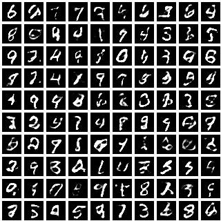

变分自编码器¶
Variatational Autoencoder(VAE)
++++ 学完本教程，您将理解如下代码(See the full code on Github.)：
[1]:
import os, torch, pyro
import numpy as np
import torchvision.datasets as dset
import torch.nn as nn
import torchvision.transforms as transforms
import pyro.distributions as dist
import pyro.contrib.examples.util # patches torchvision
from pyro.infer import SVI, Trace_ELBO
from pyro.optim import Adam
assert pyro.__version__.startswith('1.3.0')
pyro.enable_validation(True)
pyro.distributions.enable_validation(False)
pyro.set_rng_seed(0)
class Decoder(nn.Module): # 用于构建模型分布的 decoder
def __init__(self, z_dim, hidden_dim):
super().__init__()
self.fc1 = nn.Linear(z_dim, hidden_dim)
self.fc21 = nn.Linear(hidden_dim, 784)
self.softplus = nn.Softplus()
self.sigmoid = nn.Sigmoid()
def forward(self, z):
hidden = self.softplus(self.fc1(z))
loc_img = self.sigmoid(self.fc21(hidden))
return loc_img
class Encoder(nn.Module): # 用于构建指导分布的 encoder
def __init__(self, z_dim, hidden_dim):
super().__init__()
self.fc1 = nn.Linear(784, hidden_dim)
self.fc21 = nn.Linear(hidden_dim, z_dim)
self.fc22 = nn.Linear(hidden_dim, z_dim)
self.softplus = nn.Softplus()
def forward(self, x):
x = x.reshape(-1, 784)
hidden = self.softplus(self.fc1(x))
z_loc = self.fc21(hidden)
z_scale = torch.exp(self.fc22(hidden))
return z_loc, z_scale
class VAE(nn.Module):
def __init__(self, z_dim=50, hidden_dim=400, use_cuda=False):
super().__init__()
self.encoder = Encoder(z_dim, hidden_dim)
self.decoder = Decoder(z_dim, hidden_dim)
if use_cuda:
self.cuda()
self.use_cuda = use_cuda
self.z_dim = z_dim
def model(self, x): # 模型分布 p(x|z)p(z)
pyro.module("decoder", self.decoder)
with pyro.plate("data", x.shape[0]):
z_loc = x.new_zeros(torch.Size((x.shape[0], self.z_dim)))
z_scale = x.new_ones(torch.Size((x.shape[0], self.z_dim)))
z = pyro.sample("latent", dist.Normal(z_loc, z_scale).to_event(1))
loc_img = self.decoder.forward(z)
pyro.sample("obs", dist.Bernoulli(loc_img).to_event(1), obs=x.reshape(-1, 784))
def guide(self, x): # 指导分布 q(z|x)
pyro.module("encoder", self.encoder)
with pyro.plate("data", x.shape[0]):
z_loc, z_scale = self.encoder.forward(x)
pyro.sample("latent", dist.Normal(z_loc, z_scale).to_event(1))
def reconstruct_img(self, x):
z_loc, z_scale = self.encoder(x)
z = dist.Normal(z_loc, z_scale).sample()
loc_img = self.decoder(z) # 注意在图像空间中我们没有抽样
return loc_img
def setup_data_loaders(batch_size=128, use_cuda=False):
root = './data'
download = False
trans = transforms.ToTensor()
train_set = dset.MNIST(root=root, train=True, transform=trans,
download=download)
test_set = dset.MNIST(root=root, train=False, transform=trans)
kwargs = {'num_workers': 1, 'pin_memory': use_cuda}
train_loader = torch.utils.data.DataLoader(dataset=train_set,
batch_size=batch_size, shuffle=True, **kwargs)
test_loader = torch.utils.data.DataLoader(dataset=test_set,
batch_size=batch_size, shuffle=False, **kwargs)
return train_loader, test_loader
def train(svi, train_loader, use_cuda=False):
epoch_loss = 0.
for x, _ in train_loader:
if use_cuda:
x = x.cuda()
epoch_loss += svi.step(x)
normalizer_train = len(train_loader.dataset)
total_epoch_loss_train = epoch_loss / normalizer_train
return total_epoch_loss_train
def evaluate(svi, test_loader, use_cuda=False):
test_loss = 0.
for x, _ in test_loader:
if use_cuda:
x = x.cuda()
test_loss += svi.evaluate_loss(x)
normalizer_test = len(test_loader.dataset)
total_epoch_loss_test = test_loss / normalizer_test
return total_epoch_loss_test
# 模型训练
LEARNING_RATE = 1.0e-3
USE_CUDA = False
NUM_EPOCHS = 5
TEST_FREQUENCY = 5
train_loader, test_loader = setup_data_loaders(batch_size=256, use_cuda=USE_CUDA)
pyro.clear_param_store()
vae = VAE(use_cuda=USE_CUDA)
adam_args = {"lr": LEARNING_RATE}
optimizer = Adam(adam_args)
svi = SVI(vae.model, vae.guide, optimizer, loss=Trace_ELBO())
train_elbo = []
test_elbo = []
for epoch in range(NUM_EPOCHS):
total_epoch_loss_train = train(svi, train_loader, use_cuda=USE_CUDA)
train_elbo.append(-total_epoch_loss_train)
print("[epoch %03d] average training loss: %.4f" % (epoch, total_epoch_loss_train))
if epoch % TEST_FREQUENCY == 0:
# report test diagnostics
total_epoch_loss_test = evaluate(svi, test_loader, use_cuda=USE_CUDA)
test_elbo.append(-total_epoch_loss_test)
print("[epoch %03d] average test loss: %.4f" % (epoch, total_epoch_loss_test))
[epoch 000] average training loss: 190.9630
[epoch 000] average test loss: 155.7649
[epoch 001] average training loss: 146.2289
[epoch 002] average training loss: 132.9159
[epoch 003] average training loss: 124.6936
[epoch 004] average training loss: 119.5353
VAE 数学简介¶
变分自编码器（VAE）可以说是实现深度概率建模的最简单情形. 注意到我们这里措辞非常小心，VAE 不是一个模型 。 准确的来说 VAE is a particular setup for doing variational inference for a certain class of models. 模型的类别非常广泛，基本上包含任何具备潜变量的密度估计模型。这种模型的基本结构非常简单(see Fig. 1).

[1]:
# # 画图
# from graphviz import Digraph
# g = Digraph('G')
# with g.subgraph(name='cluster_0') as c:
# c.edges([('z', 'x')])
# c.attr(label='#N')
# g.edge('theta', 'x')
# g.attr(label="Figure 1: the class of deep models we're interested in.")
# g
在这里，我们以图模型描述了我们感兴趣的那种模型的结构。We have \(N\) observed datapoints \(\{ \bf x_i \}\). Each datapoint is generated by a (local) latent random variable \(\bf z_i\). There is also a parameter \(\theta\), which is global in the sense that all the datapoints depend on it (这就是为什么它在矩形外部绘制). Note that since \(\theta\) is a parameter, it’s not something we’re being Bayesian about. Finally, what’s of particular importance here is that we allow for each \(\bf x_i\) to depend on \(\bf z_i\) in a complex, non-linear way. In practice this dependency will be parameterized by a (deep) neural network with parameters \(\theta\). It’s this non-linearity that makes inference for this class of models particularly challenging.
（我们可以灵活的设置模型分布）Of course this non-linear structure is also one reason why this class of models offers a very flexible approach to modeling complex data. Indeed it’s worth emphasizing that each of the components of the model can be ‘reconfigured’ in a variety of different ways. For example:
the neural network in \(p_\theta({\bf x} | {\bf z})\) can be varied in all the usual ways (number of layers, type of non-linearities, number of hidden units, etc.)
we can choose observation likelihoods that suit the dataset at hand: gaussian, bernoulli, categorical, etc.
we can choose the number of dimensions in the latent space
（模型分布的分解形式）The graphical model representation is a useful way to think about the structure of the model, but it can also be fruitful to look at an explicit factorization of the joint probability density:
The fact that \(p({\bf x}, {\bf z})\) breaks up into a product of terms like this makes it clear what we mean when we call \(\bf z_i\) a local random variable. For any particular \(i\), only the single datapoint \(\bf x_i\) depends on \(\bf z_i\). As such the \(\{\bf z_i\}\) describe local structure, i.e. structure that is private to each data point. This factorized structure also means that we can do subsampling during the course of learning. As such this sort of model is amenable to the large data setting. (有关此主题和相关主题的更多讨论，请参见`SVI Part II <svi_part_ii.ipynb>`__.)
这就是模型的全部内容。由于观测值以复杂的非线性方式依赖于潜变量，因此我们期望潜变量后验分布具有复杂的结构，为了在此模型中进行推断，我们需要指定一组灵活的指导分布（即变分分布）。由于我们希望能够扩展到大型数据集，因此我们的指南将使用 amortization 来控制变量参数的数量（有关 amortization 的一般性讨论，请参见 SVI Part II）。
（指导分布的设置）Recall that the job of the guide is to ‘guess’ good values for the latent random variables—good in the sense that they’re true to the model prior and true to the data. If we weren’t making use of amortization, we would introduce variational parameters \(\{ \lambda_i \}\) for each datapoint \(\bf x_i\). These variational parameters would represent our belief about ‘good’ values of \(\bf z_i\); for example, they could encode the mean and variance of a gaussian distribution in \({\bf z}_i\) space. Amortization means that, rather than introducing variational parameters \(\{ \lambda_i \}\), we instead learn a function that maps each \(\bf x_i\) to an appropriate \(\lambda_i\). Since we need this function to be flexible, we parameterize it as a neural network. We thus end up with a parameterized family of distributions over the latent \(\bf z\) space that can be instantiated for all \(N\) datapoint \({\bf x}_i\) (see Fig. 2).

（变分推断的目标）Note that the guide \(q_{\phi}({\bf z} | {\bf x})\) is parameterized by a global parameter \(\phi\) shared by all the datapoints. The goal of inference will be to find ‘good’ values for \(\theta\) and \(\phi\) so that two conditions are satisfied:
the log evidence \(\log p_\theta({\bf x})\) is large. this means our model is a good fit to the data
the guide \(q_{\phi}({\bf z} | {\bf x})\) provides a good approximation to the posterior
有关随机变分推理的介绍，请参见 SVI Part I.
（解码器）At this point we can zoom out and consider the high level structure of our setup. For concreteness, let’s suppose the \(\{ \bf x_i \}\) are images so that the model is a generative model of images. Once we’ve learned a good value of \(\theta\) we can generate images from the model as follows:
sample \(\bf z\) according to the prior \(p({\bf z})\)
sample \(\bf x\) according to the likelihood \(p_\theta({\bf x}|{\bf z})\)
Each image is being represented by a latent code \(\bf z\) and that code gets mapped to images using the likelihood, which depends on the \(\theta\) we’ve learned. This is why the likelihood is often called the decoder in this context: its job is to decode \(\bf z\) into \(\bf x\). Note that since this is a probabilistic model, there is uncertainty about the \(\bf z\) that encodes a given datapoint \(\bf x\).
（自编码器）Once we’ve learned good values for \(\theta\) and \(\phi\) we can also go through the following exercise.
we start with a given image \(\bf x\)
using our guide we encode it as \(\bf z\)
using the model likelihood we decode \(\bf z\) and get a reconstructed image \({\bf x}_\rm{reco}\)
If we’ve learned good values for \(\theta\) and \(\phi\), \(\bf x\) and \({\bf x}_\rm{reco}\) should be similar. 这阐明了“autoencoder”一词的由来：模型分布是解码器，指导分布是编码器。在一起，它们可以被视为自编码器。
VAE in Pyro¶
让我们看看如何在 Pyro 中实现 VAE。我们要建模的数据集是MNIST，这是手写数字图像的集合。由于这是一个受欢迎的基准数据集，因此我们可以利用PyTorch便利的数据加载器功能来减少我们需要编写的样板代码量：
[2]:
import os
import numpy as np
import torch
import torchvision.datasets as dset
import torch.nn as nn
import torchvision.transforms as transforms
import pyro
import pyro.distributions as dist
import pyro.contrib.examples.util # patches torchvision
from pyro.infer import SVI, Trace_ELBO
from pyro.optim import Adam
[3]:
assert pyro.__version__.startswith('1.3.0')
pyro.enable_validation(True)
pyro.distributions.enable_validation(False)
pyro.set_rng_seed(0)
# Enable smoke test - run the notebook cells on CI.
smoke_test = 'CI' in os.environ
[4]:
# for loading and batching MNIST dataset
def setup_data_loaders(batch_size=128, use_cuda=False):
root = './data'
download = False
trans = transforms.ToTensor()
train_set = dset.MNIST(root=root, train=True, transform=trans,
download=download)
test_set = dset.MNIST(root=root, train=False, transform=trans)
kwargs = {'num_workers': 1, 'pin_memory': use_cuda}
train_loader = torch.utils.data.DataLoader(dataset=train_set,
batch_size=batch_size, shuffle=True, **kwargs)
test_loader = torch.utils.data.DataLoader(dataset=test_set,
batch_size=batch_size, shuffle=False, **kwargs)
return train_loader, test_loader
The main thing to draw attention to here is that we use transforms.ToTensor() to normalize the pixel intensities to the range \([0.0, 1.0]\).
（定义用于构建模型分布的 decoder）Next we define a PyTorch module that encapsulates our decoder network:
[5]:
class Decoder(nn.Module):
def __init__(self, z_dim, hidden_dim):
super().__init__()
# setup the two linear transformations used
self.fc1 = nn.Linear(z_dim, hidden_dim)
self.fc21 = nn.Linear(hidden_dim, 784)
# setup the non-linearities
self.softplus = nn.Softplus()
self.sigmoid = nn.Sigmoid()
def forward(self, z):
# define the forward computation on the latent z
# first compute the hidden units
hidden = self.softplus(self.fc1(z))
# return the parameter for the output Bernoulli
# each is of size batch_size x 784
loc_img = self.sigmoid(self.fc21(hidden))
return loc_img
Given a latent code \(z\), the forward call of Decoder returns the parameters for a Bernoulli distribution in image space. Since each image is of size \(28\times28=784\), loc_img is of size batch_size x 784.
（定义用于构建指导分布的 encoder）Next we define a PyTorch module that encapsulates our encoder network:
[6]:
class Encoder(nn.Module):
def __init__(self, z_dim, hidden_dim):
super().__init__()
# setup the three linear transformations used
self.fc1 = nn.Linear(784, hidden_dim)
self.fc21 = nn.Linear(hidden_dim, z_dim)
self.fc22 = nn.Linear(hidden_dim, z_dim)
# setup the non-linearities
self.softplus = nn.Softplus()
def forward(self, x):
# define the forward computation on the image x
# first shape the mini-batch to have pixels in the rightmost dimension
x = x.reshape(-1, 784)
# then compute the hidden units
hidden = self.softplus(self.fc1(x))
# then return a mean vector and a (positive) square root covariance
# each of size batch_size x z_dim
z_loc = self.fc21(hidden)
z_scale = torch.exp(self.fc22(hidden))
return z_loc, z_scale
Given an image \(\bf x\) the forward call of Encoder returns a mean and covariance that together parameterize a (diagonal) Gaussian distribution in latent space.
（把解码器变成模型分布）With our encoder and decoder networks in hand, we can now write down the stochastic functions that represent our model and guide. First the model:
[7]:
# define the model p(x|z)p(z)
def model(self, x):
# register PyTorch module `decoder` with Pyro
pyro.module("decoder", self.decoder)
with pyro.plate("data", x.shape[0]):
# setup hyperparameters for prior p(z)
z_loc = x.new_zeros(torch.Size((x.shape[0], self.z_dim)))
z_scale = x.new_ones(torch.Size((x.shape[0], self.z_dim)))
# sample from prior (value will be sampled by guide when computing the ELBO)
z = pyro.sample("latent", dist.Normal(z_loc, z_scale).to_event(1))
# decode the latent code z
loc_img = self.decoder.forward(z)
# score against actual images
pyro.sample("obs", dist.Bernoulli(loc_img).to_event(1), obs=x.reshape(-1, 784))
Note that model() is a callable that takes in a mini-batch of images x as input. This is a torch.Tensor of size batch_size x 784.
The first thing we do inside of model() is register the (previously instantiated) decoder module with Pyro. Note that we give it an appropriate (and unique) name. This call to pyro.module lets Pyro know about all the parameters inside of the decoder network.
Next we setup the hyperparameters for our prior, which is just a unit normal gaussian distribution. Note that: - we specifically designate independence amongst the data in our mini-batch (i.e. the leftmost dimension) via pyro.plate. Also, note the use of .to_event(1) when sampling from the latent z - this ensures that instead of treating our sample as being generated from a univariate normal with batch_size = z_dim, we treat them as being generated from a multivariate normal
distribution with diagonal covariance. As such, the log probabilities along each dimension is summed out when we evaluate .log_prob for a “latent” sample. Refer to the Tensor Shapes tutorial for more details. - since we’re processing an entire mini-batch of images, we need the leftmost dimension of z_loc and z_scale to equal the mini-batch size - in case we’re on GPU, we use new_zeros and new_ones to ensure that newly created tensors are on the same
GPU device.
Next we sample the latent z from the prior, making sure to give the random variable a unique Pyro name 'latent'. Then we pass z through the decoder network, which returns loc_img. We then score the observed images in the mini-batch x against the Bernoulli likelihood parametrized by loc_img. Note that we flatten x so that all the pixels are in the rightmost dimension.
（把编码器编码成指导分布）That’s all there is to it! Note how closely the flow of Pyro primitives in model follows the generative story of our model, e.g. as encapsulated by Figure 1. Now we move on to the guide:
[8]:
# define the guide (i.e. variational distribution) q(z|x)
def guide(self, x):
# register PyTorch module `encoder` with Pyro
pyro.module("encoder", self.encoder)
with pyro.plate("data", x.shape[0]):
# use the encoder to get the parameters used to define q(z|x)
z_loc, z_scale = self.encoder.forward(x)
# sample the latent code z
pyro.sample("latent", dist.Normal(z_loc, z_scale).to_event(1))
Just like in the model, we first register the PyTorch module we’re using (namely encoder) with Pyro. We take the mini-batch of images x and pass it through the encoder. Then using the parameters output by the encoder network we use the normal distribution to sample a value of the latent for each image in the mini-batch. Crucially, we use the same name for the latent random variable as we did in the model: 'latent'. Also, note the use of pyro.plate to designate independence of the
mini-batch dimension, and .to_event(1) to enforce dependence on z_dims, exactly as we did in the model.
（组合模型分布，指导分布，已经模型参数）Now that we’ve defined the full model and guide we can move on to inference. But before we do so let’s see how we package the model and guide in a PyTorch module:
[9]:
class VAE(nn.Module):
# by default our latent space is 50-dimensional
# and we use 400 hidden units
def __init__(self, z_dim=50, hidden_dim=400, use_cuda=False):
super().__init__()
# create the encoder and decoder networks
self.encoder = Encoder(z_dim, hidden_dim)
self.decoder = Decoder(z_dim, hidden_dim)
if use_cuda:
# calling cuda() here will put all the parameters of
# the encoder and decoder networks into gpu memory
self.cuda()
self.use_cuda = use_cuda
self.z_dim = z_dim
# define the model p(x|z)p(z)
def model(self, x):
# register PyTorch module `decoder` with Pyro
pyro.module("decoder", self.decoder)
with pyro.plate("data", x.shape[0]):
# setup hyperparameters for prior p(z)
z_loc = x.new_zeros(torch.Size((x.shape[0], self.z_dim)))
z_scale = x.new_ones(torch.Size((x.shape[0], self.z_dim)))
# sample from prior (value will be sampled by guide when computing the ELBO)
z = pyro.sample("latent", dist.Normal(z_loc, z_scale).to_event(1))
# decode the latent code z
loc_img = self.decoder.forward(z)
# score against actual images
pyro.sample("obs", dist.Bernoulli(loc_img).to_event(1), obs=x.reshape(-1, 784))
# define the guide (i.e. variational distribution) q(z|x)
def guide(self, x):
# register PyTorch module `encoder` with Pyro
pyro.module("encoder", self.encoder)
with pyro.plate("data", x.shape[0]):
# use the encoder to get the parameters used to define q(z|x)
z_loc, z_scale = self.encoder.forward(x)
# sample the latent code z
pyro.sample("latent", dist.Normal(z_loc, z_scale).to_event(1))
# define a helper function for reconstructing images
def reconstruct_img(self, x):
# encode image x
z_loc, z_scale = self.encoder(x)
# sample in latent space
z = dist.Normal(z_loc, z_scale).sample()
# decode the image (note we don't sample in image space)
loc_img = self.decoder(z)
return loc_img
The point we’d like to make here is that the two Modules encoder and decoder are attributes of VAE (which itself inherits from nn.Module). This has the consequence they are both automatically registered as belonging to the VAE module. So, for example, when we call parameters() on an instance of VAE, PyTorch will know to return all the relevant parameters. It also means that if we’re running on a GPU, the call to cuda() will move all the parameters of all the
(sub)modules into GPU memory.
Inference¶
We’re now ready for inference. Refer to the full code in the next section.
First we instantiate an instance of the VAE module.
[10]:
vae = VAE()
Then we setup an instance of the Adam optimizer.
[11]:
optimizer = Adam({"lr": 1.0e-3})
Then we setup our inference algorithm, which is going to learn good parameters for the model and guide by maximizing the ELBO:
[12]:
svi = SVI(vae.model, vae.guide, optimizer, loss=Trace_ELBO())
That’s all there is to it. Now we just have to define our training loop:
[13]:
def train(svi, train_loader, use_cuda=False):
# initialize loss accumulator
epoch_loss = 0.
# do a training epoch over each mini-batch x returned
# by the data loader
for x, _ in train_loader:
# if on GPU put mini-batch into CUDA memory
if use_cuda:
x = x.cuda()
# do ELBO gradient and accumulate loss
epoch_loss += svi.step(x)
# return epoch loss
normalizer_train = len(train_loader.dataset)
total_epoch_loss_train = epoch_loss / normalizer_train
return total_epoch_loss_train
Note that all the mini-batch logic is handled by the data loader. The meat of the training loop is svi.step(x). There are two things we should draw attention to here:
any arguments to
stepare passed to the model and the guide. consequentlymodelandguideneed to have the same call signaturestepreturns a noisy estimate of the loss (i.e. minus the ELBO). this estimate is not normalized in any way, so e.g. it scales with the size of the mini-batch
The logic for adding evaluation logic is analogous:
[14]:
def evaluate(svi, test_loader, use_cuda=False):
# initialize loss accumulator
test_loss = 0.
# compute the loss over the entire test set
for x, _ in test_loader:
# if on GPU put mini-batch into CUDA memory
if use_cuda:
x = x.cuda()
# compute ELBO estimate and accumulate loss
test_loss += svi.evaluate_loss(x)
normalizer_test = len(test_loader.dataset)
total_epoch_loss_test = test_loss / normalizer_test
return total_epoch_loss_test
Basically the only change we need to make is that we call evaluate_loss instead of step. This function will compute an estimate of the ELBO but won’t take any gradient steps.
The final piece of code we’d like to highlight is the helper method reconstruct_img in the VAE class: This is just the image reconstruction experiment we described in the introduction translated into code. We take an image and pass it through the encoder. Then we sample in latent space using the gaussian distribution provided by the encoder. Finally we decode the latent code into an image: we return the mean vector loc_img instead of sampling with it. Note that since the sample()
statement is stochastic, we’ll get different draws of z every time we run the reconstruct_img function. If we’ve learned a good model and guide—in particular if we’ve learned a good latent representation—this plurality of z samples will correspond to different styles of digit writing, and the reconstructed images should exhibit an interesting variety of different styles.
Code and Sample results¶
Training corresponds to maximizing the evidence lower bound (ELBO) over the training dataset. We train for 100 iterations and evaluate the ELBO for the test dataset, see Figure 3.
[15]:
# Run options
LEARNING_RATE = 1.0e-3
USE_CUDA = False
# Run only for a single iteration for testing
NUM_EPOCHS = 1 if smoke_test else 100
TEST_FREQUENCY = 5
[16]:
train_loader, test_loader = setup_data_loaders(batch_size=256, use_cuda=USE_CUDA)
# clear param store
pyro.clear_param_store()
# setup the VAE
vae = VAE(use_cuda=USE_CUDA)
# setup the optimizer
adam_args = {"lr": LEARNING_RATE}
optimizer = Adam(adam_args)
# setup the inference algorithm
svi = SVI(vae.model, vae.guide, optimizer, loss=Trace_ELBO())
train_elbo = []
test_elbo = []
# training loop
for epoch in range(NUM_EPOCHS):
total_epoch_loss_train = train(svi, train_loader, use_cuda=USE_CUDA)
train_elbo.append(-total_epoch_loss_train)
print("[epoch %03d] average training loss: %.4f" % (epoch, total_epoch_loss_train))
if epoch % TEST_FREQUENCY == 0:
# report test diagnostics
total_epoch_loss_test = evaluate(svi, test_loader, use_cuda=USE_CUDA)
test_elbo.append(-total_epoch_loss_test)
print("[epoch %03d] average test loss: %.4f" % (epoch, total_epoch_loss_test))
Downloading https://d2hg8soec8ck9v.cloudfront.net/datasets/mnist/train-images-idx3-ubyte.gz to ./data/MNIST/raw/train-images-idx3-ubyte.gz
Extracting ./data/MNIST/raw/train-images-idx3-ubyte.gz to ./data/MNIST/raw
Downloading https://d2hg8soec8ck9v.cloudfront.net/datasets/mnist/train-labels-idx1-ubyte.gz to ./data/MNIST/raw/train-labels-idx1-ubyte.gz
Extracting ./data/MNIST/raw/train-labels-idx1-ubyte.gz to ./data/MNIST/raw
Downloading https://d2hg8soec8ck9v.cloudfront.net/datasets/mnist/t10k-images-idx3-ubyte.gz to ./data/MNIST/raw/t10k-images-idx3-ubyte.gz
Extracting ./data/MNIST/raw/t10k-images-idx3-ubyte.gz to ./data/MNIST/raw
Downloading https://d2hg8soec8ck9v.cloudfront.net/datasets/mnist/t10k-labels-idx1-ubyte.gz to ./data/MNIST/raw/t10k-labels-idx1-ubyte.gz
Extracting ./data/MNIST/raw/t10k-labels-idx1-ubyte.gz to ./data/MNIST/raw
Processing...
Done!
[epoch 000] average training loss: 191.0216
[epoch 000] average test loss: 156.0872
[epoch 001] average training loss: 146.8141
[epoch 002] average training loss: 133.2540
[epoch 003] average training loss: 124.6775
[epoch 004] average training loss: 119.5152
[epoch 005] average training loss: 116.1240
[epoch 005] average test loss: 113.7908
[epoch 006] average training loss: 113.7285
[epoch 007] average training loss: 112.0445
[epoch 008] average training loss: 110.7292
[epoch 009] average training loss: 109.7455
[epoch 010] average training loss: 108.9070
[epoch 010] average test loss: 107.7720
[epoch 011] average training loss: 108.2513
[epoch 012] average training loss: 107.6953
[epoch 013] average training loss: 107.2849
[epoch 014] average training loss: 106.8870
[epoch 015] average training loss: 106.4983
[epoch 015] average test loss: 105.9786
[epoch 016] average training loss: 106.1872
[epoch 017] average training loss: 105.9363
[epoch 018] average training loss: 105.7087
[epoch 019] average training loss: 105.4600
[epoch 020] average training loss: 105.2648
[epoch 020] average test loss: 104.7753
[epoch 021] average training loss: 105.0442
[epoch 022] average training loss: 104.9031
[epoch 023] average training loss: 104.7304
[epoch 024] average training loss: 104.6027
[epoch 025] average training loss: 104.4586
[epoch 025] average test loss: 104.2971
[epoch 026] average training loss: 104.3756
[epoch 027] average training loss: 104.2278
[epoch 028] average training loss: 104.1049
[epoch 029] average training loss: 104.0565
[epoch 030] average training loss: 103.8851
[epoch 030] average test loss: 103.5858
[epoch 031] average training loss: 103.7705
[epoch 032] average training loss: 103.7331
[epoch 033] average training loss: 103.6272
[epoch 034] average training loss: 103.5645
[epoch 035] average training loss: 103.4693
[epoch 035] average test loss: 103.1316
[epoch 036] average training loss: 103.3898
[epoch 037] average training loss: 103.3199
[epoch 038] average training loss: 103.2840
[epoch 039] average training loss: 103.1866
[epoch 040] average training loss: 103.1108
[epoch 040] average test loss: 103.0911
[epoch 041] average training loss: 103.0730
[epoch 042] average training loss: 103.0086
[epoch 043] average training loss: 102.9338
[epoch 044] average training loss: 102.8886
[epoch 045] average training loss: 102.8416
[epoch 045] average test loss: 102.8022
[epoch 046] average training loss: 102.7832
[epoch 047] average training loss: 102.7389
[epoch 048] average training loss: 102.6800
[epoch 049] average training loss: 102.6738
[epoch 050] average training loss: 102.5855
[epoch 050] average test loss: 102.5790
[epoch 051] average training loss: 102.5615
[epoch 052] average training loss: 102.4934
[epoch 053] average training loss: 102.4610
[epoch 054] average training loss: 102.4274
[epoch 055] average training loss: 102.3712
[epoch 055] average test loss: 102.3923
[epoch 056] average training loss: 102.3328
[epoch 057] average training loss: 102.2912
[epoch 058] average training loss: 102.1891
[epoch 059] average training loss: 102.2194
[epoch 060] average training loss: 102.1762
[epoch 060] average test loss: 102.1223
[epoch 061] average training loss: 102.1585
[epoch 062] average training loss: 102.0887
[epoch 063] average training loss: 102.0703
[epoch 064] average training loss: 102.0091
[epoch 065] average training loss: 101.9924
[epoch 065] average test loss: 102.0361
[epoch 066] average training loss: 101.9461
[epoch 067] average training loss: 101.8985
[epoch 068] average training loss: 101.8809
[epoch 069] average training loss: 101.8587
[epoch 070] average training loss: 101.8102
[epoch 070] average test loss: 102.1124
[epoch 071] average training loss: 101.7739
[epoch 072] average training loss: 101.7548
[epoch 073] average training loss: 101.7252
[epoch 074] average training loss: 101.7424
[epoch 075] average training loss: 101.6693
[epoch 075] average test loss: 101.8703
[epoch 076] average training loss: 101.6238
[epoch 077] average training loss: 101.5941
[epoch 078] average training loss: 101.5562
[epoch 079] average training loss: 101.5380
[epoch 080] average training loss: 101.4967
[epoch 080] average test loss: 101.6312
[epoch 081] average training loss: 101.4572
[epoch 082] average training loss: 101.4549
[epoch 083] average training loss: 101.3729
[epoch 084] average training loss: 101.3880
[epoch 085] average training loss: 101.3953
[epoch 085] average test loss: 101.5520
[epoch 086] average training loss: 101.3212
[epoch 087] average training loss: 101.3289
[epoch 088] average training loss: 101.3108
[epoch 089] average training loss: 101.2534
[epoch 090] average training loss: 101.2607
[epoch 090] average test loss: 101.2997
[epoch 091] average training loss: 101.2435
[epoch 092] average training loss: 101.1965
[epoch 093] average training loss: 101.1350
[epoch 094] average training loss: 101.1215
[epoch 095] average training loss: 101.0969
[epoch 095] average test loss: 101.2543
[epoch 096] average training loss: 101.1045
[epoch 097] average training loss: 101.0621
[epoch 098] average training loss: 101.0410
[epoch 099] average training loss: 101.0019
Figure 3: How the test ELBO evolves over the course of training.
Next we show a set of randomly sampled images from the model. These are generated by drawing random samples of z and generating an image for each one, see Figure 4.
|
|
 |
We also study the 50-dimensional latent space of the entire test dataset by encoding all MNIST images and embedding their means into a 2-dimensional T-SNE space. We then color each embedded image by its class. The resulting Figure 5 shows separation by class with variance within each class-cluster.
See the full code on Github.
参考文献
[1] Auto-Encoding Variational Bayes, Diederik P Kingma, Max Welling
[2] Stochastic Backpropagation and Approximate Inference in Deep Generative Models, Danilo Jimenez Rezende, Shakir Mohamed, Daan Wierstra